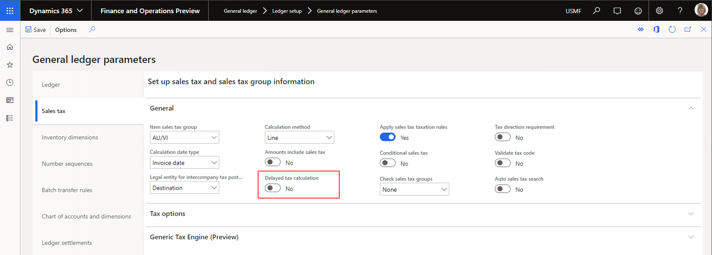
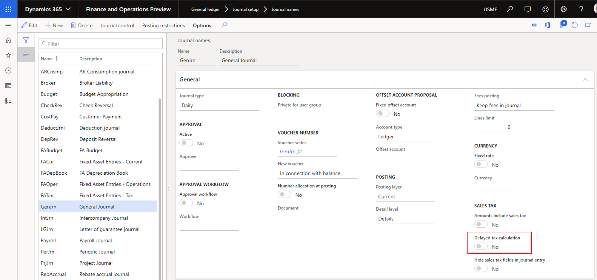
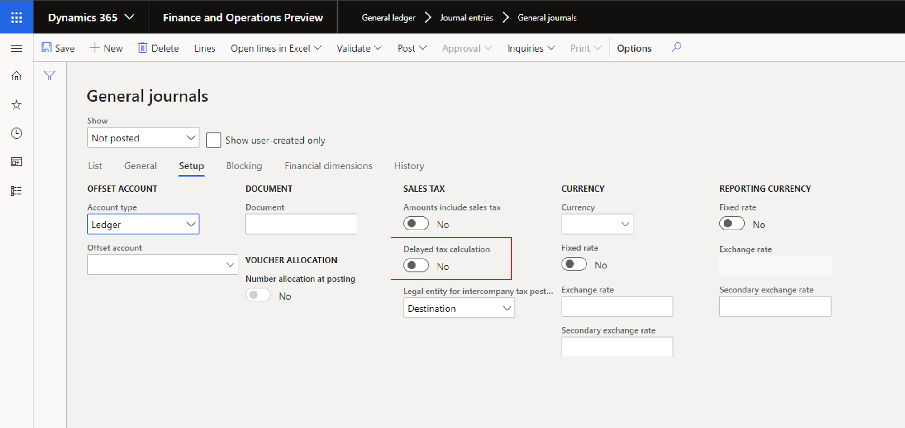

Aktivieren der verzögerten Steuerberechnung in Erfassungen
Important
Dynamics 365 for Finance and Operations hat sich zu speziell entwickelten Anwendungen entwickelt, mit denen Sie bestimmte Geschäftsfunktionen verwalten können. Weitere Informationen zu diesen Änderungen finden Sie im Dynamics 365-Lizenzierungshandbuch.
In diesem Thema wird erläutert, wie Sie die Mehrwertsteuerberechnung in Erfassungen verzögern können. Diese Funktion kann die Leistung von Steuerberechnungen verbessern, wenn viele Erfassungspositionen vorhanden sind.
Standardmäßig werden Mehrwertsteuerbeträge in Erfassungspositionen berechnet, sobald steuerbezogene Felder aktualisiert werden. Diese Felder enthalten die Felder für Mehrwertsteuergruppen und Artikel-Mehrwertsteuergruppen. Jede Aktualisierung einer Erfassungsposition führt dazu, dass Steuerbeträge für alle Erfassungspositionen neu berechnet werden. Obwohl dieses Verhalten Benutzern hilft, Steuerbetragsberechnungen in Echtzeit anzuzeigen, kann es sich auch auf die Leistung auswirken, wenn die Anzahl der Erfassungspositionen sehr groß ist.
Mit der Funktion Verzögerte Steuerberechnung können Sie die Steuerberechnung für Erfassungen verzögern und damit Leistungsprobleme beheben. Wenn diese Funktion aktiviert ist, werden Steuerbeträge nur dann berechnet, wenn ein Benutzer Mehrwertsteuer auswählt oder die Erfassung bucht.
Sie können die Berechnung der Mehrwertsteuer auf drei Ebenen verzögern:
- Juristische Person
- Journal
- Erfassungskopf
Das System gibt der Einrichtung für den Erfassungskopf Vorrang. Standardmäßig wird diese Einstellung aus dem Journal übernommen. Standardmäßig wird die Einstellung für das Journal aus der Einstellung auf der Seite Hauptbuchparameter übernommen, wenn das Journal erstellt wird. In den folgenden Abschnitten wird erklärt, wie eine verzögerte Steuerberechnung für juristische Personen, Journale und Erfassungsköpfe aktiviert wird.
Aktivieren der verzögerten Steuerberechnung auf der Ebene der juristische Person
- Wechseln Sie zu Hauptbuch > Sachkonto-Einstellungen > Hauptbuchparameter.
- Legen Sie auf der Registerkarte Mehrwertsteuer im Inforegister Allgemein die Option Verzögerte Steuerberechnung auf Ja fest.

Aktivieren der verzögerten Steuerberechnung auf der Ebene des Journals
- Wechseln Sie zu Hauptbuch > Erfassungseinstellungen > Journale.
- Legen Sie im Inforegister Allgemein im Abschnitt Mehrwertsteuer die Option Verzögerte Steuerberechnung auf Ja fest.

Aktivieren der verzögerten Steuerberechnung auf der Ebene des Erfassungskopfes
- Wechseln Sie zu Hauptbuch > Journaleinträge > Allgemeine Erfassungen.
- Wählen Sie Neu aus.
- Wählen Sie ein Journal aus.
- Legen Sie auf der Registerkarte Einstellungen die Option Verzögerte Steuerberechnung auf Ja fest.
